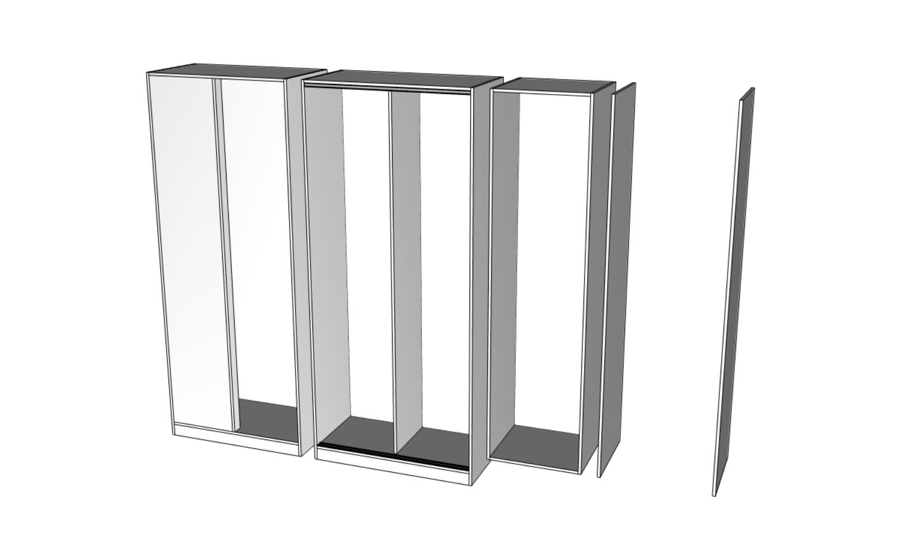
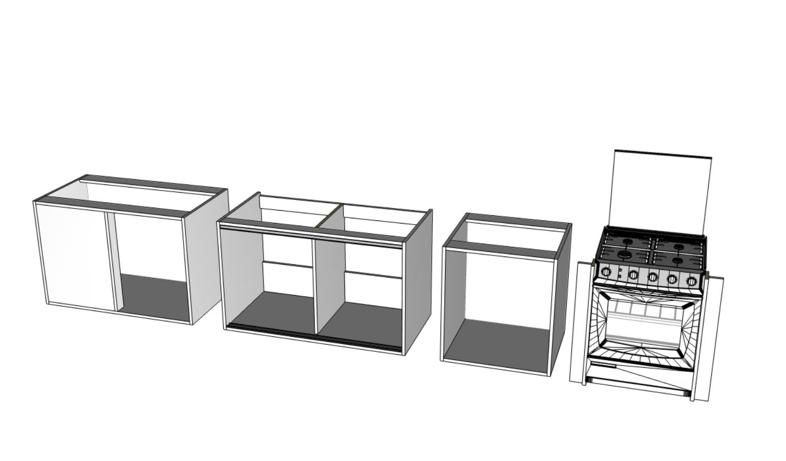
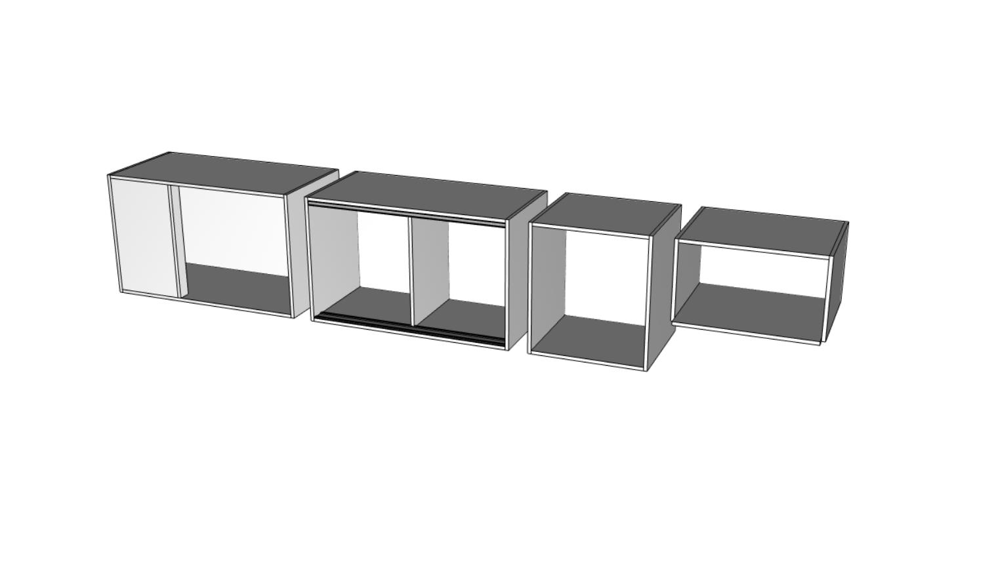
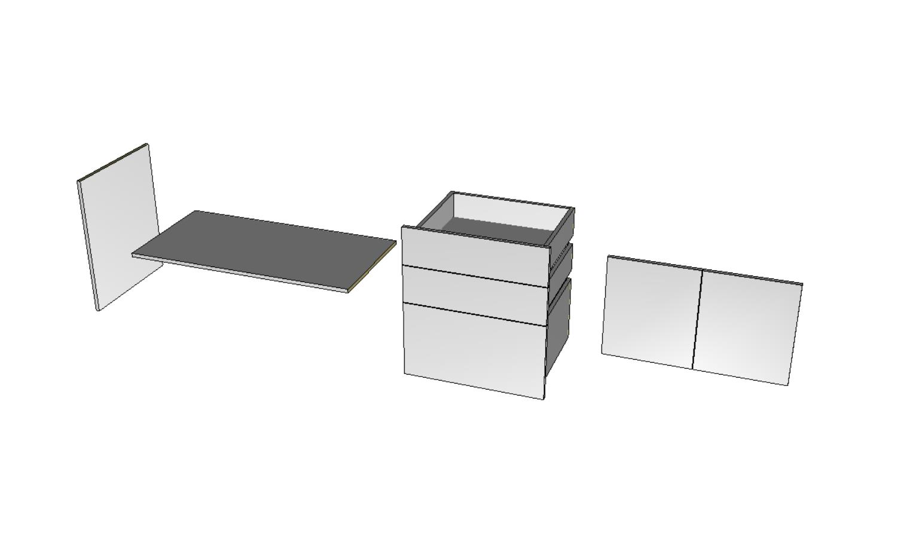

As linhas de produtos desenvolvidas possuem uma característica singular, fornecemos as estruturas das caixarias vazias e sem rótulos de ambientes, que por sua vez podem receber os respectivos agregados, ou seja, os acessórios, aramados, outras caixarias, as frentes, os internos e automatizações (rodopias, tampos, tamponamentos, rodapés e rodatetos). Facilitando inúmeras combinações que podem ser salvas posteriormente em favoritos, aí sim, caso queiram, poderão organizá-los por ambientes como: área de serviços, banho, cozinha, home office, quarto e sala. Armários
Módulos compostos por estruturas conhecidas como torres, dispensários, colunas ou roupeiros; essa descrição depende muito do ambiente em que estiver inserido, disponíveis nas opções com e sem rodapés.
Módulos compostos por estruturas conhecidas como balcões, bancadas e sob pia; podendo conter ou não rodapés ou ficarem até mesmo suspensos (fixados na parede).
Módulos compostos por estruturas conhecidas como de parede e maleiros, sendo muito versáteis e participando de várias soluções.
Uma ampla gama de possibilidades que podem ser combinados com as estruturas já vistas ou mesmo entre si, com as alternativas disponíveis você poderá criar diversas soluções organizadoras, adicionando ou removendo as opções que desejar.
